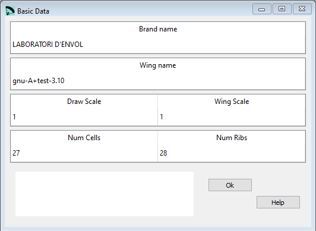

Basic data¶
In the Basic data window you can edit a subset of the parameters from the first section in the lep file.
{kind=link}
Raw data:
**************************************************************
* 1. GEOMETRY *
**************************************************************
* Brand name
"LABORATORI D'ENVOL"
* Wing name
"gnu-A+test-3.10"
* Drawing scale
1.
* Wing scale
1.
* Number of cells
27
* Number of ribs
28
A drawing scale of 1 means that the drawings will be created in a scale of 1:1.
With the wing scale you can scale the whole design in once without chaning every single parameter. A Wing scale of 1 means that the whole design is created with the original values as edited in the GUI.
There’s a direct connection between the number of ribs and cells. If there are values which can not be achieved pyhisically the input fields will be marked in red.

Depending of the setting for the ribs other windows (e.g. Geometry and Anchor points) will be adapted as well.
A more detailed description you can find here Laboratori d'envol website.